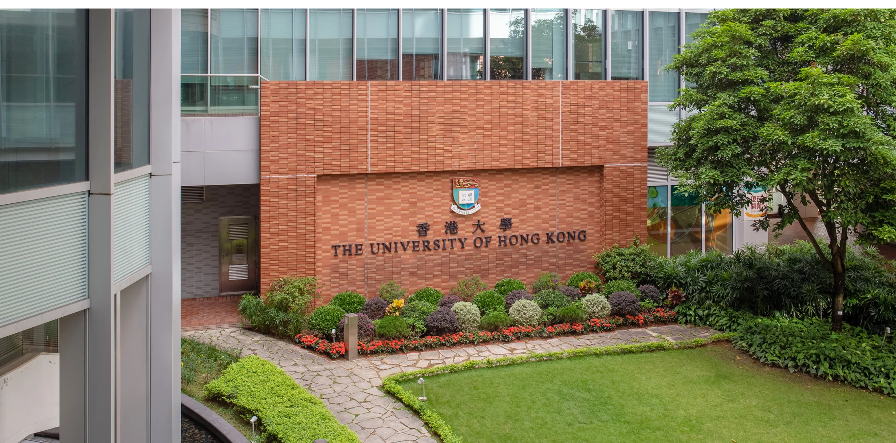

Technology, situated in life.
Every situation is inseparable from lived experience. | 一切景語皆情語
Situated Reality Lab (SiR) is an interdisciplinary research group in the Department of Data and Systems Engineering at The University of Hong Kong. We bring together HCI, AI and XR to create situated, embodied and deployable technologies that extend human capability in everyday life.
Three ways to situate intelligence.
 01 / AUGMENT
01 / AUGMENTHuman Augmentation
Embodied AI, telexistence, cybernetic avatars and human capability.
 02 / SITUATE
02 / SITUATESituational Spatial Intelligence
Context-aware AI and adaptive interfaces that understand place and intent.
 03 / DEPLOY
03 / DEPLOYRobust & Deployable XR
Resilient immersive infrastructure built for uncontrolled environments.

Research that belongs in the real world.
We combine XR, sensing, intelligent systems and human-centred engineering. Our unit of design is the whole situation: person, place, activity and intent.
From human need to deployable system.
We begin by understanding a lived situation, prototype situated intelligence around it, and test whether the result survives outside controlled conditions.

Curious, rigorous and humane.
We value technical depth, creative risk, respectful collaboration and research that meaningfully improves how people perceive, act and connect.
View opportunities →